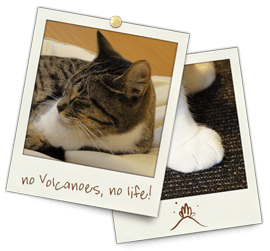

日本大学文理学部 地球科学科
地震火山教育研究部門／火山・岩石学領域
教員・高橋 正樹 Masaki Takahashi
・安井 真也 Maya Yasui
・金丸 龍夫 Tatsuo Kanamaru
平成29年度 火山・岩石学研究室 所属学生
４年生：13名
３年生：17名
これまでの教員
＊荒牧重雄先生のページへGO
●教育研究の目標
環太平洋火山帯の一部である日本では活発な火山活動がみられ，火山大国とも言われます。過去の火山活動とその災害をよく知ることは、将来の噴火の活動予測や防災の上でも欠かせません。
火山・岩石学研究室では，浅間，桜島，富士山などの諸火山や火成岩体の地質学的、岩石学的検討を通じて、地下のマグマプロセスや噴火の様式，火山体のでき方などの解明に取り組んでいます。
●研究室の沿革
火山・岩石学（岩石学）研究室は、1960年代初期の日本大学文理学部応用地学科設置期以来の伝統を有する、地球科学科の中でも最も長い歴史を持つ研究室のひとつである。
初代教授は掘福太郎先生で、御専門は造岩鉱物学および変成岩岩石学である。堀先生は東京大学理学部地質学教室岩石学講座の御出身で、卒業後東京大学教養学部の助手を務められておられた。堀先生は東京帝国大学理学部岩石学講座の第２代教授を務めた坪井誠太郎先生の弟子であった。1962年に開設間もない日本大学文理学部応用地学科に助教授として移られ、1968年に教授に昇進されて以来30年の長きにわたって応用地学科に貢献された。堀先生が定年の年1992年にお亡くなりになった後、1994年から第２代教授として赴任されたのが荒牧重雄先生である。
荒牧先生は堀先生と同じく東京大学理学部地質学教室岩石学講座の御出身で、東京大学地震研究所教授、北海道大学理学部教授を歴任された後、応用地学科教授に就任された。荒牧先生の御専門は、火山地質学および岩石学である。荒牧先生は、東京大学理学部岩石学講座第３代教授である久野久先生の弟子である。荒牧先生は定年までの７年間文理学部で御活躍されたが、研究室の名称は岩石学から火山・岩石学に改められた。荒牧先生の任期中に、応用地学科は地球システム科学科に改組された。荒牧先生の定年退職の後、高橋正樹教授が茨城大学理学部より第３代教授として赴任した。
高橋教授は堀先生、荒牧先生と同じく東京大学理学部地質学教室岩石学講座の出身で、荒牧先生の弟子である。高橋教授の専門は火成岩地質学および岩石学である。また、この間、荒牧先生の助手を務めた安井真也氏が専任講師、さらに准教授に昇格している。現在の火山・岩石学研究室は高橋研究室と安井研究室の合同研究室となっており、高橋教授が主に岩石学を、安井教授が主に火山地質学を担当している。また2007年に金丸龍夫氏が着任し、助教として主に岩石磁気学的手法での指導を担当している。2016年度から地球システム科学科は地球科学科へ名称変更し、現在に至っている。（文：高橋）

画：M.Takahashi
高橋 正樹たかはし・まさき
- 東京大学 理学部 地質鉱物学科卒
- 東京大学 理系大学院 博士課程修了
東京港区芝生まれの江戸っ子．芝神明様で産湯をつかり，芝公園を駆け回る幼少時を過ごす．大学入学後，博物学と自然哲学に惹かれて地質学の道を志す．
学部・大学院時代は，中部九州の祖母・傾・大崩山塊で，毎日千メートル余りの高度差を登り降りし，中期中新世の大崩山火山深成複合岩体の研究に打ち込む．
博士課程修了後は茨城大学理学部地球科学科および地球生命環境科学科・教授を経て，現職．
関心のある分野：私の研究史参照のこと．（準備中）

安井 真也やすい・まや
- 日本大学 文理学部 応用地学科卒
- 日本大学大学院 理工学研究科地理学専攻
博士後期課程修了
小学５年生まで熊本で阿蘇火山を見て育つ。日本大学文理学部の応用地学科に入学してすぐに日本火山学会に入会。学生時代は国内外の火山を夢中で見て回る。大学院博士後期課程では、浅間火山天明噴火の推移と様式の研究に取り組む。修了後、文理学部に就職、現在に至る。
関心のある分野：浅間火山をメインのフィールドとして、安山岩質マグマの噴火の推移や噴火様式についての研究を行っています。特に火口近傍でのマグマ噴出過程や火山体の形成過程に興味があり（プロキシマル火山地質学）、野外スケールから顕微鏡スケールまでの噴出物の観察・記載をすすめています。桜島火山やハワイのキラウエア火山などとの比較も通じて、噴火メカニズムの理解にも貢献できればと考えます。
専門：火山学(火山地質)

金丸 龍夫かなまる・たつお
- 茨城大学 理学部 地球生命環境科学科卒業
- 神戸大学大学院 自然科学研究科
地球環境科学専攻 博士後期課程修了
高校まで甲府盆地から御坂山地越しに見える富士山を位置座標の中心として過ごす．このため，今でも南側が頭中の地図の上になってしまうことがある（山梨県民の特徴らしい）．学生時代は，南部フォッサマグナ地域の火成岩体の形成過程について研究．
関心のある分野：深成岩やマグマ溜りの形成に関連した話題に興味を持っています．最近では，火山噴出物の磁気特性から，噴火・定置過程が明らかにならないかと，あれこれ検討しています．さらに，最近では，南極の岩石の風化に関する研究も行っています．．
専門：地質学、岩石・鉱物・鉱床学
 Department of Geosystem Sciences, College of Humanities and Sciences, Nihon University
3-25-40, Sakurajosui, Setagaya-ku, Tokyo 156-8550 Japan
Department of Geosystem Sciences, College of Humanities and Sciences, Nihon University
3-25-40, Sakurajosui, Setagaya-ku, Tokyo 156-8550 Japan